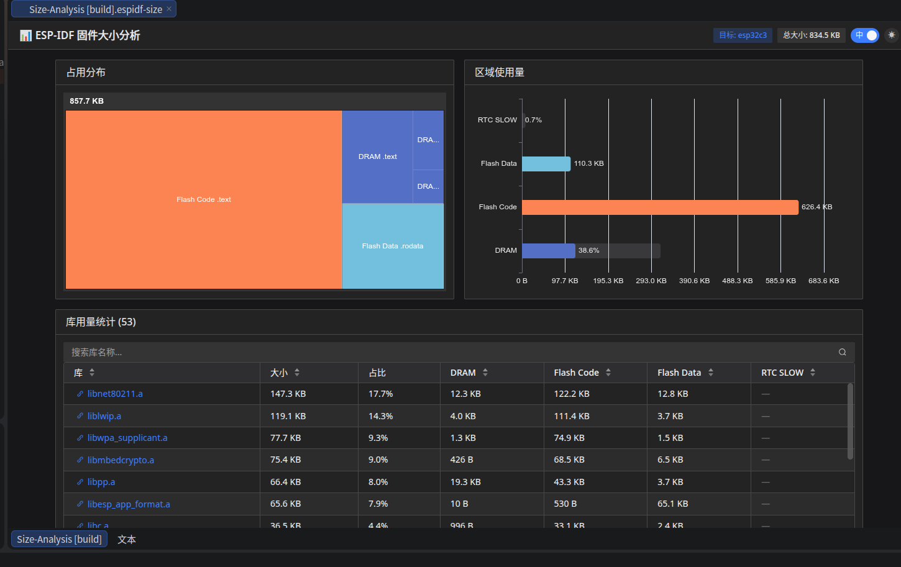

固件占用分析
固件占用分析功能帮助你可视化 ESP-IDF 编译产物的空间占用情况，通过多层下钻定位占用空间最大的库、源文件和符号。

使用方式
在 IDE 顶部菜单栏选择 Tools → ESP-IDF Tools → Size Analysis
等待编译完成后，插件将自动打开固件占用分析面板。
面板包含以下视图：
顶层：库用量统计
顶部显示固件空间分布 Treemap 和各区域的容量使用条形图。下方表格列出所有库文件，按占用大小降序排列，每个库均展示在 DRAM、IRAM 等各区域中的占用详情。点击库名可下钻查看其包含的目标文件。
下钻：目标文件详情
展示选中库内的所有 .o 目标文件及其在各区域的占用大小。点击文件名可继续下钻。
下钻：符号详情
展示选中目标文件内的所有符号（函数、变量等）及其跨区域的占用详情。这是最细粒度的分析层级。
通用操作
搜索 ：每级表格顶部均支持关键词过滤。
排序 ：点击列头可按各维度排序。
图表 ：下钻页面提供 Treemap 和 Top 10 条形图辅助分析。
24 六月 2026